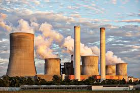
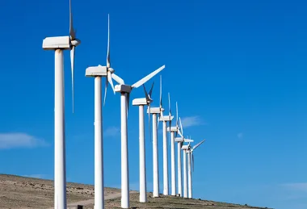
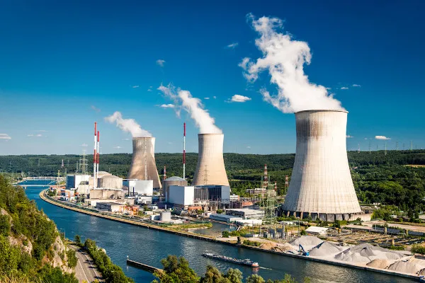
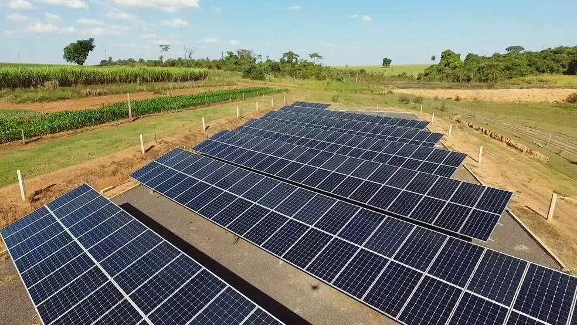

oque é a geração de energia eletrica?
É a geração de energia pelos movimentos de partículas carregas, como o elétrons
É a geração de energia pelos movimentos de partículas carregas, como o elétrons
Energia biomassa: Energia gerada pela materia organica ou a queima de gases em sua decomposição
Energia maremotriz: é a geração de energia por causa da movimentação dos mares
Hídrica: energia gerada atraves das movimentações dos rios
Energia geotérmica: é a geração de energia gerada pelo calor interior da terra, que é transformado em eletrcidade
Energia nuclear: geração de energia causada pelas reações nucleares
Solar: energia gerada atraves das reações nucleares do sol
Energia Luminosa: "É a forma de energia que está associada à radiação eletromagnética.
A fonte principal do nosso pais é a hidroelétrica, ja que atualmente, 64% da energia consumida vem da hidroelétrica
A energia termoeletrica é a segunda principal do brasil, sendo consumida em 27% em todo nosso pais
Em terceiro lugar fica a eolica, com 7%
Em penuntimo, ficando a energia nuclear, tendo 1%
Em ultimo ficando a energia solar, tendo 1%
